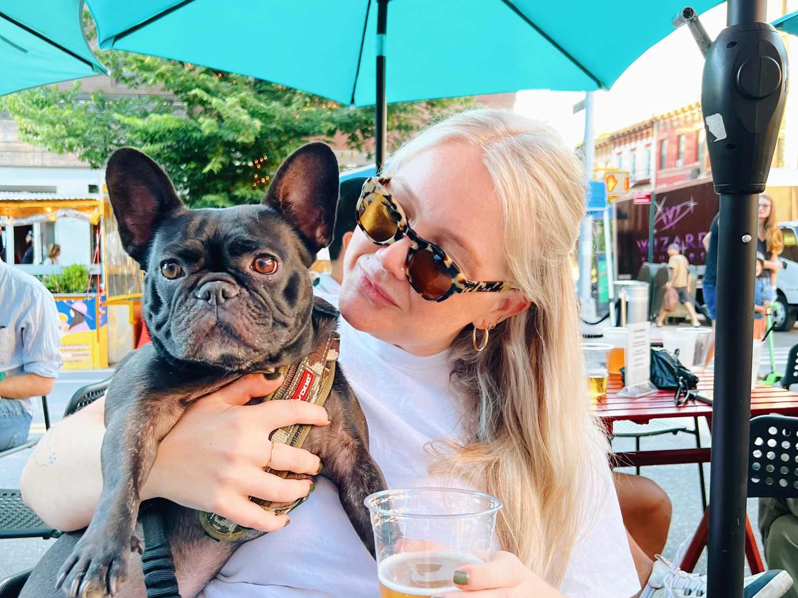

Amanda is brand and marketing focused multidisciplinary designer based in Brooklyn, NY. She has previously worked with a range of tech and start-up companies spanning edtech, weddings, high-end veterinary care, and human-grade dog food – of which she enjoys developing and maintaining brands as an in-house designer for mission driven companies.
She believes design isn't just about aesthetics; it's about ensuring functionality – and loves working with teammates who collaborate and challenge one-another. Her skill-set ranges from branding and identity, to art direction, digital and print campaign design, packaging, iconography, photography, social media design, websites, UI design & more. She enjoys creating design structure and takes a methodical approach to her work.
When not designing – she enjoys:
- Spending time with her partner and French Bulldog, Lady
- Playing in a competitive shuffleboard league
- Plotting her next dinner reservation around the city
- Being someone with an iced coffee in their hand year-round
Thanks for stopping by!
Resume |
Linkedin

◾ Design ◾ Art Direction